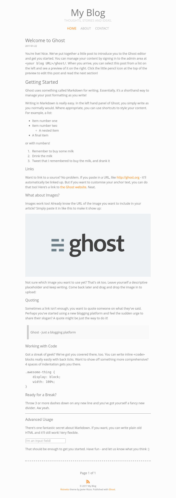

Javier Rizzo / Ristretto
Ristretto
A minimalist, caffeinated Ghost theme.
Screenshot

About
I made this theme for my blog. It is based on both my website and my previous Ghost theme, Arabica.
This Ghost theme is free and open source. Get the source on GitHub!
Features
- It's minimalist: Uncluttered so you can focus on reading.
- It's responsive: It can be read just as well on a PC, a tablet or a smartphone.
- It's fast: That's what I mean with caffeinated. It contains as little CSS and JS as possible, without compromising usability. Even Google's PageSpeed Insights ranks it a solid 100/100.
- It has syntax highlightingUsing Prism.js, if you specify a language on a code block, it will be automatically colored.
- It has icons: Powered by Font Awesome.
- It's easily extensible: Ads and comment sections can be added easily without editing the theme code.
Installation
Just clone the GitHub repo on your content/themes/ folder and restart Ghost.